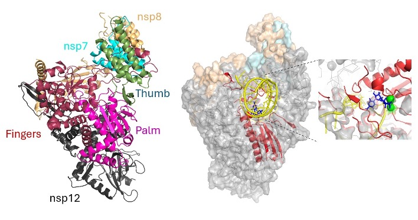

RNA-Dependent RNA Polymerase (RdRp)
Polymerase Function and Context
This section provides a polymerase-centered interpretation of replication performance, mutation persistence, and antiviral relevance. The RdRp (nsp12 with cofactors nsp7/nsp8) is essential for viral RNA synthesis and represents a key antiviral target.
RdRp in the Viral Cycle
RdRp (nsp12) is the catalytic core of the replication-transcription complex and operates with cofactors such as nsp7 and nsp8 [1, 2]. It drives genomic and subgenomic RNA synthesis and therefore directly shapes replication throughput [1, 2].
Functional interpretation should include proofreading context (for example nsp14) and co-mutation patterns, since polymerase performance is system-level rather than single-site only [3].

Structure of RdRp nsp12 comprising of different subdomains complexed with nsp7 and two nsp8. The active site catalyzes nucleotide incorporation by recognizing the correct pairing between template base and incoming NTP substrate.
RdRp Analytical Focus
| Dimension | Observation Target | Interpretive Value |
|---|---|---|
| Free energy analysis on cognate and non cognate base pairing | Relative free energy profiles for matched vs mismatched nucleotide incorporation states | Supports interpretation of polymerase fidelity, mismatch tolerance, and replication error propensity |
| Catalytic context | nsp12-centered substitutions | Links sequence changes to replication hypotheses |
| Complex interactions | nsp7/nsp8 and proofreading-associated co-patterns | Improves mechanistic plausibility of interpretations |
| Epidemiological coupling | RdRp changes with lineage growth trajectories | Helps separate neutral drift from selected variants |
| Clinical relevance | Persistent substitutions in treatment-era lineages | Supports antiviral-context monitoring |
References
- [1] Gao, Y. et al. Structure of the RNA-dependent RNA polymerase from COVID-19 virus. Science 368, 779-782 (2020). Link.
- [2] Hillen, H. S. et al. Structure of replicating SARS-CoV-2 polymerase. Nature 584, 154-156 (2020). Link.
- [3] Ferron, F. et al. Structural and molecular basis of mismatch correction and ribavirin excision from coronavirus RNA. PNAS 115, E162-E171 (2018). DOI.